How engineering teams ship production code with AI agents — without the slop.
What's inside:
Your team adopted Claude Code six months ago. The demos were electric — a senior engineer shipped a feature in 20 minutes that used to take a day. You rolled it out to the whole team.
Now it's sprint review. The board looks great: stories are closing faster than ever. But something is wrong.
What you're actually seeing:
BaseRepository<T> abstraction nobody asked for. The reviewer has to reverse-engineer why it exists before they can evaluate whether it's correct.The AI is fast. It's also unsupervised. And unsupervised speed produces slop at scale.
This playbook shows you how to fix it.
These aren't bugs. They're structural problems — they emerge from how AI agents work, not from any particular agent being "bad." Every team using AI coding tools hits at least three of them within the first quarter.
The agent guesses what "user" means and ships the wrong domain model. You asked for a link shortener. It built a user management system with roles, teams, and invitations — because it assumed that's what "user" requires. No one told it otherwise because no one wrote it down.
The agent forgets the spec mid-implementation and invents new behavior. Halfway through UC-002, it decides the form should also support batch URL uploads. That wasn't in the spec. Nobody asked for it. But the agent's context window moved on, and it filled the gap with creativity instead of compliance.
The agent introduces a BaseRepository<T> for a project with one repository. A withErrorHandler decorator wrapping a single endpoint. An abstract Strategy pattern for a feature that has exactly one strategy. Each one adds cognitive load, review time, and maintenance burden — for zero value.
Tests pass. The feature is broken. The agent mocked every dependency that matters — the database, the API client, the middleware — and tested that the mocks return what the mocks were told to return. 100% coverage, zero confidence.
A bug fix becomes a 600-line refactor. The agent noticed "while it was in there" that the error handling could be "improved." Now the PR touches 12 files across 3 domains, the reviewer can't separate the fix from the cleanup, and the deploy risk just tripled.
Nexa Agentic Engineering doesn't make the agent smarter. It makes the process structural. Every phase produces a machine-readable artifact. Every downstream phase reads it. The agent cannot skip, invent, or forget — because the methodology is configuration, not discipline.
Each skill reads the upstream artifacts and writes a new one. The chain is enforced — /implement refuses to run without a spec and design. /evaluate checks the implementation against both.
| Requirements | Silent assumptions (#1) |
| Entity model | Wrong data model (#1) |
| Use case spec | Spec amnesia (#2) |
| Code review | Phantom abstractions (#3) |
| Real tests | Verification theater (#4) |
| Scope gate | Scope drift (#5) |
Free nexa-claude-core
Stack-agnostic. Vision → requirements → entity model → diagrams → wireframes → specs → designs. Works with any technology.
Paid nexa-claude-nextjs
Implementation → Vitest + Playwright tests → sprint delivery → evaluation. Closes the loop from spec to merged code.
We built lnk.sh — a privacy-respecting URL shortener — end-to-end with this methodology. Every screenshot that follows is a real artifact generated by a Nexa skill. No edits, no after-the-fact polish.
Small enough to read in one sitting. Rich enough to demand a real entity model, non-trivial business rules (rate limits, slug collisions, abuse blocklists, anonymous expiry), and three distinct UI states per screen.
Anonymous Visitor pastes a URL, gets a short link
Link Owner views their dashboard
302 redirect — no UI on the success path
Next.js 15 App Router + Server ActionsPrisma 6 + PostgreSQL 16Vitest unit tests (pure functions)Playwright E2E against real PostgresBun runtime + package managerEach phase below shows the skill, its input, its output, and the failure mode it structurally prevents.
/requirementsA 30-line vision.md — problem statement, goals, non-goals, success metrics, constraints.
requirements.md — 4 Functional Requirements, 11 Non-Functional Requirements, 7 Constraints. Each row: singular, measurable, testable, unique ID.
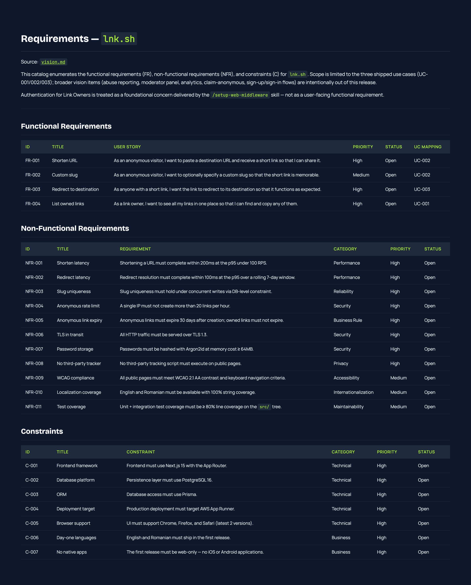
Every row passes the Nexa quality gate: no prose, no ambiguity. "p95 < 200ms under 100 RPS" instead of "the system should be fast." Each FR maps to a use case ID. Each NFR is measurable.
Failure mode #1 (silent assumptions) is now structurally prevented. There is a machine-readable record of exactly what the system does and does not do. If the agent later proposes building "an analytics dashboard," the gate rejects it — there is no FR for it.
/entity-modelrequirements.md
entity_model.md — Mermaid ER diagram + attribute tables with types, lengths, and validation rules.
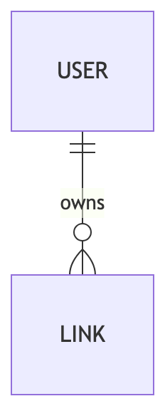
Two entities: USER (link owners) and LINK (shortened URLs). Every attribute has a data type, max length, and validation constraints. Multi-column constraints are explicit: anonymous links must have expiresAt = createdAt + 30 days; owned links have expiresAt = null.
This is not a prose description. It is a structured input that the implementation phase consumes directly. When /prisma-migration runs, it has a single source of truth instead of inferring schema shape from "looks like there should be a User table."
Failure mode #1 (silent assumptions) cannot leak into the data layer. The schema is locked before any code is written.
/use-case-diagramrequirements.md + entity model
use_cases.puml — PlantUML diagram with actors, use cases, and dependencies.
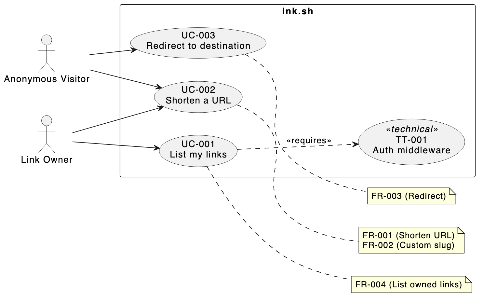
Two actors (Anonymous Visitor, Link Owner), three user-facing use cases, one technical task (TT-001: auth middleware). Each use case is annotated with the FR IDs it traces to. The <<requires>> arrow from UC-001 to TT-001 makes the dependency explicit.
This diagram is the canonical registry of "what use cases exist." Every downstream skill reads it to find the next ID, detect duplicates, and reject unknown IDs.
Failure mode #5 (scope drift) is now a structural impossibility. The agent cannot invent a UC-099 mid-sprint — the gate checks the diagram and rejects unknown IDs.
/generate-wireframeUse case diagram + requirements + entity model
wireframes/index.html — a single HTML file with production-grade visual design, interactive screens, and annotated components.
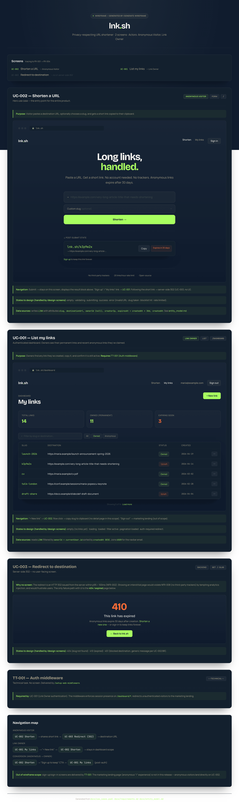
The agent committed to a bold aesthetic direction: midnight + electric lime, Bricolage Grotesque + Manrope. It built two interactive screens (UC-002 hero form + UC-001 dashboard), noted UC-003 has no UI (it's a 302 redirect), and populated realistic data from the entity model.
This is not a gray box-and-arrow sketch. The methodology demands a strong wireframe because weak wireframes produce weak designs. /design-screens inherits the typography, palette, and component vocabulary from this file.
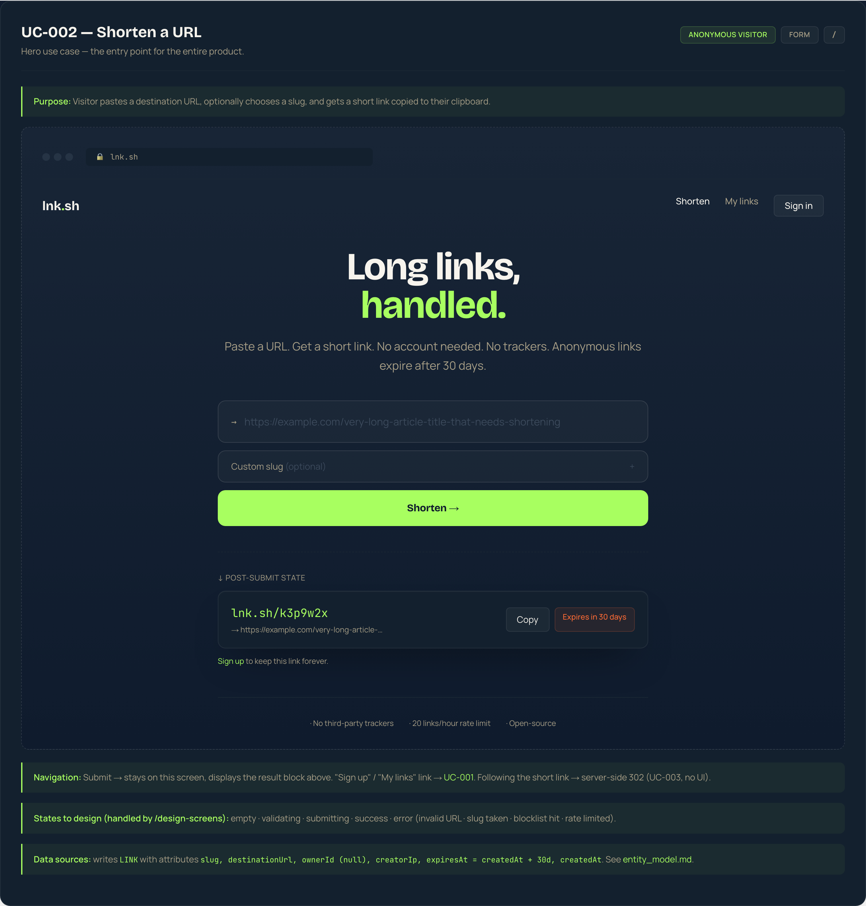
The hero screen. URL input, optional custom slug, six states.
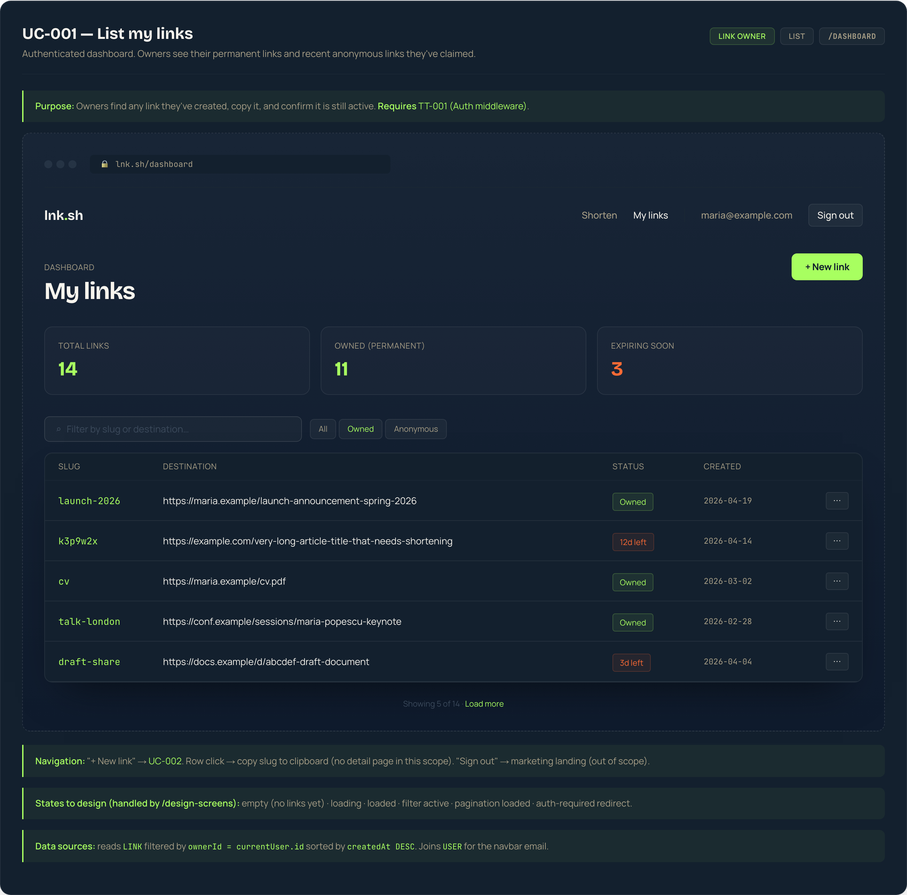
Link Owner dashboard with slug, destination, click count, expiry.
Failure mode #1 (silent assumptions) on the UI axis. By committing to a visual identity early, the agent avoids the "every screen is a slightly different gray rectangle" pattern. Every downstream design inherits this vocabulary.
/use-case-specWireframe + requirements + entity model + use case diagram
Three structured specs: UC-001.md, UC-002.md, UC-003.md
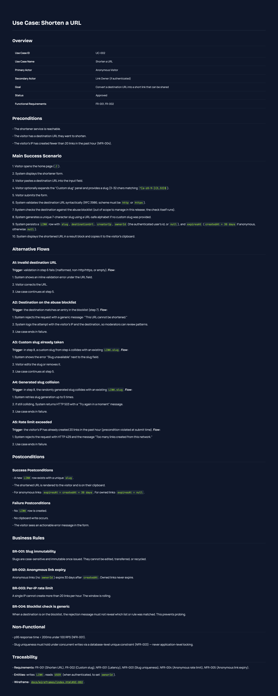
Each spec follows the same structure: Overview • Preconditions • Main Success Scenario (numbered steps) • Alternative Flows (trigger + step-by-step recovery) • Postconditions • Business Rules • Non-Functional • Traceability.
These are not "user stories" or one-paragraph blurbs. They are step-by-step, machine-checkable specifications. The implementation phase reads them line by line. Every alternative flow becomes a code path. Every code path gets a test.
Failure mode #2 (spec amnesia) is structurally prevented. The agent re-reads the spec at every implementation step. Nothing is "remembered" — everything is referenced.
/design-screens — UC-002Each use case spec produces a design HTML with every state annotated. UC-002 has 6 states — here are the 4 most critical:
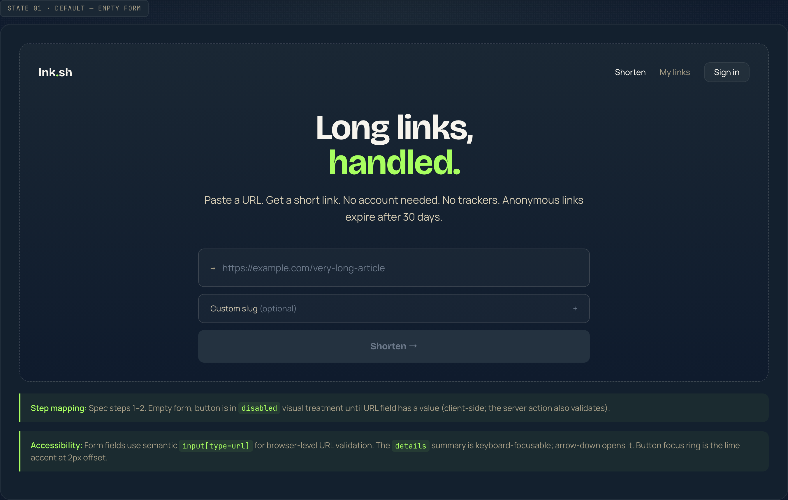
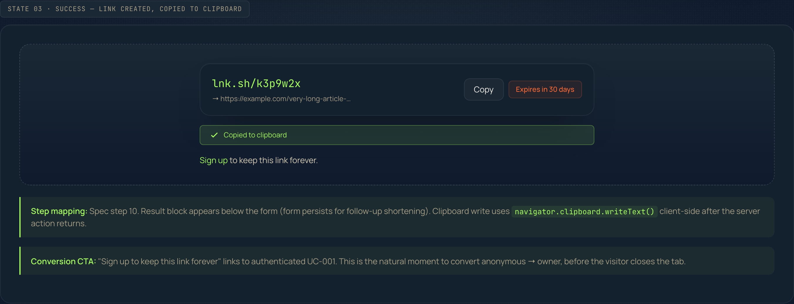
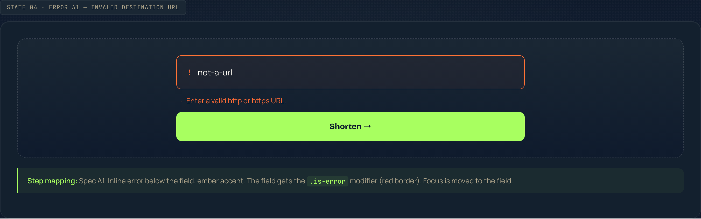
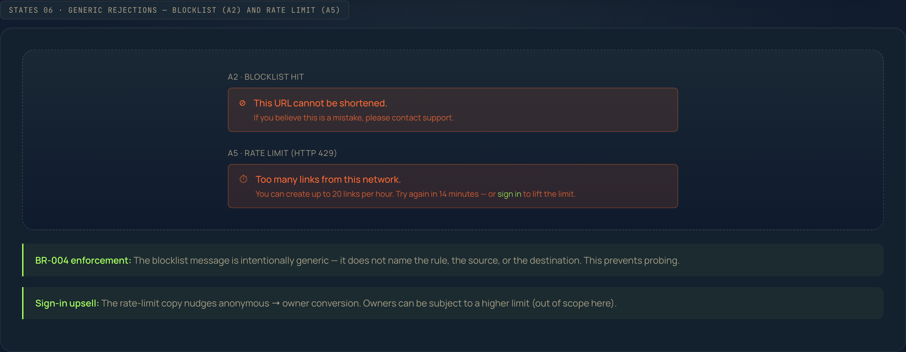
Every state names the spec step it implements, the data it reads/writes, and design rationale. There is no daylight between spec and design.
/design-screens — UC-001: List my linksThe dashboard has three states: loaded (links visible), empty (new user), and loading (Suspense fallback). Each maps to a specific alternative flow in the spec.
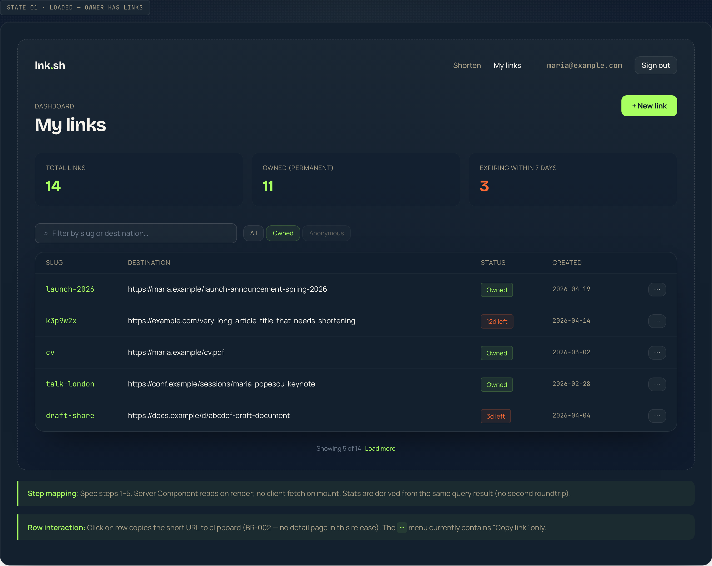
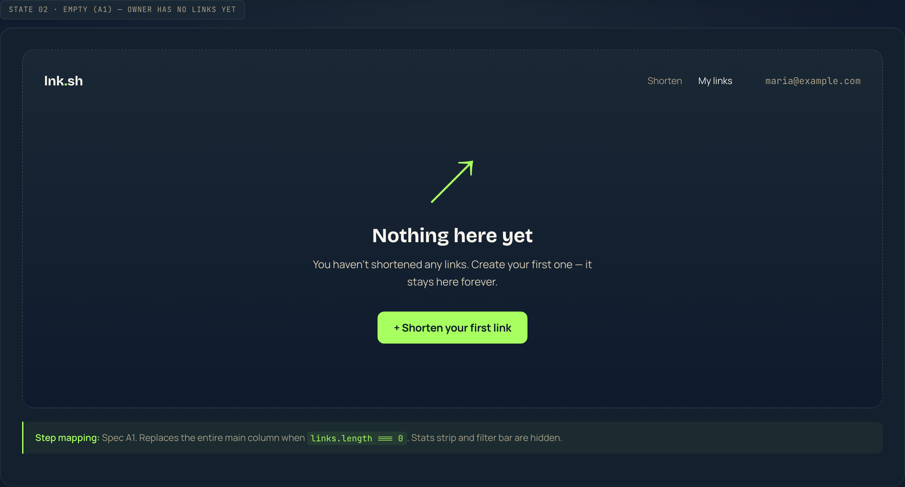
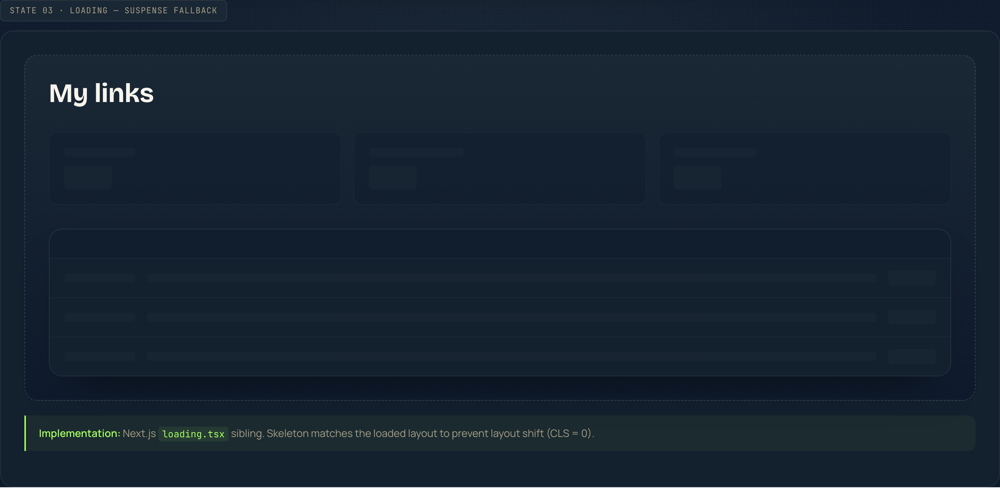
/design-screens — UC-003: Redirect to destinationUC-003 has no UI on the success path — it's a 302 redirect. The design document captures the HTTP trace and the three failure pages.
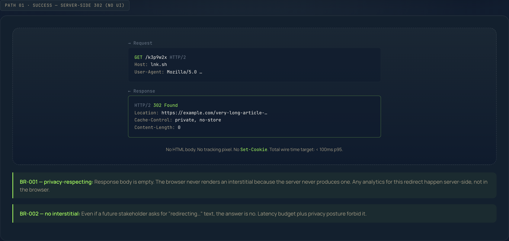
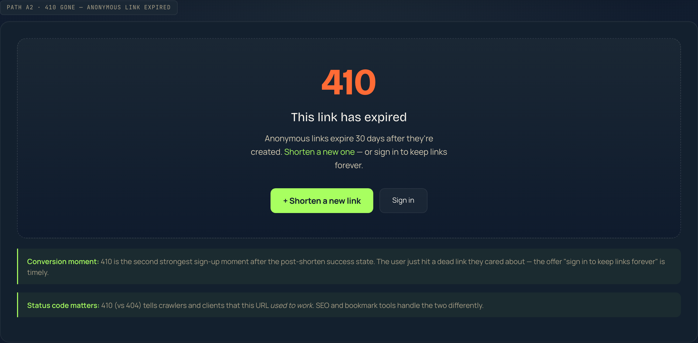
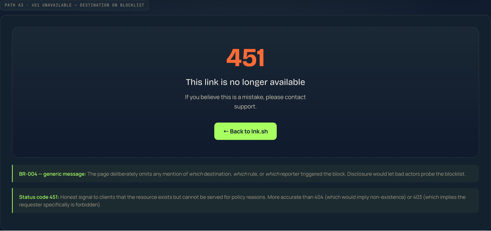
Failure modes #1 and #4 are constrained by structure. Every visible state has a design that names the spec step. When Playwright tests run, they assert the same set of states. The design is the contract between spec and implementation.
/implement + /vitest-test + /playwright-testThe three use case specs and three design HTMLs become a working Next.js 15 application. The agent did not invent a new field, endpoint, or state. Every line traces to an artifact written upstream.
| Layer | Files | Tied to spec |
|---|---|---|
| UC-002 | page.tsx • ShortenForm.tsx • shorten.ts |
Every numbered step → code path; every alt flow → error variant |
| UC-003 | [slug]/route.ts • failure-pages.ts |
302 success + 404/410/451 status codes (BR-003) |
| UC-001 | dashboard/page.tsx • loading.tsx • Navbar.tsx |
Server component, empty state, loading skeleton, redirect-to-sign-in |
| TT-001 | middleware.ts • session.ts |
Cookie-gated dashboard; security headers |
| Schema | prisma/schema.prisma |
Direct projection of entity_model.md |
Vitest (3 files, 40 tests)
slug.test.ts — length, alphabet, uniqueness, custom-slug regexurl-validator.test.ts — http/https, scheme rejection, 2048-char ceilingblocklist.test.ts — known-host blocking, case-insensitivityPlaywright E2E (2 files, 6 tests)
Failure modes #2 (spec amnesia) and #3 (phantom abstractions) cannot occur. The spec is the source of truth at write-time. There is no BaseRepository<T>, no withErrorHandler decorator, no abstract Strategy pattern. Failure mode #4 (verification theater) is avoided — unit tests cover pure functions (no mocking needed), and Playwright hits a real Postgres through a real dev server.
| Use cases shipped | 3 (UC-001, UC-002, UC-003) + TT-001 |
| Source files (app/, lib/, components/, middleware) | 19 files |
| Lines of TypeScript (excl. tests) | ~1,000 |
| Vitest specs | 3 files • 40 tests • 141 assertions |
| Playwright E2E specs | 2 files • 6 scenarios |
| Design artifacts | 3 HTML files • 13 annotated states |
| Upstream documents | Requirements + entity model + 3 specs + wireframe + use case diagram |
| Phantom abstractions | 0 |
The agent did not skip a phase. It did not invent a use case. It did not add a feature flag for a hypothetical future requirement. The code looks like the spec. The spec looks like the requirements. The requirements look like the vision.
That is the full claim of the methodology, demonstrated end-to-end.
shortenAction() — every error variant matches a spec alternative flow
The walkthrough showed a single use case flowing through the pipeline. In practice, you're shipping 3–8 use cases per sprint. Nexa handles this with four sprint-level skills:
/sprint-prepare/sprint-kickoffsprint-* branch (code never lands on main directly). Verifies all selected use cases pass the readiness gate. Sets up the sprint tracking file.
/sprint-deliver/deliver-use-case for each use case in priority order. Each delivery is: implement → unit test → E2E test → evaluate. A failure on one use case does not block others.
/sprint-completeEach sprint produces: code on a branch, passing tests, evaluation reports, closed issues, and a dashboard.
/sprint-rework resets the sprint branch to main and re-delivers all use cases from scratch. This sounds expensive — but because every artifact (spec, design, entity model) is already locked upstream, the re-delivery is fast and deterministic. The agent isn't "fixing" code; it's re-generating it from the same specs.
This is the key insight: the artifacts are the investment, not the code. Code is a projection of specs. If the projection is wrong, re-project. Don't patch.
If the answer is "none" or "the PR description," you have a Failure Mode #2 problem. The agent is generating code from its own interpretation, not from a shared agreement. Every sprint, the gap between "what we meant" and "what got built" widens.
Nexa fixes this by making the spec a structural input to implementation — not a document the agent reads once and forgets.
If review is dominating, you have a Failure Mode #3 + #5 problem. The agent is inventing abstractions and expanding scope, and your senior engineers are spending their time reverse-engineering AI decisions instead of shipping features.
Nexa caps the agent's freedom. It can only build what the spec says. The reviewer's job shrinks from "understand what the agent was thinking" to "verify the spec was followed."
The methodology adds ~30 minutes of upfront work per use case (requirements, spec, design). It saves 2–4 hours of review, rework, and debugging per use case. The math works at any team size, but it gets better as the team grows — because every new engineer can read the spec instead of reverse-engineering the code.
13 skills • Stack-agnostic
17 skills • Next.js stack
nexa-claude-core (free) in your Claude Code projectnexa-starter-shortener and explore the artifacts/requirements on your own product ideaWhen you hit the implementation step, you'll know what comes next.
Questions? Reach out at robert.sicoie@gmail.com